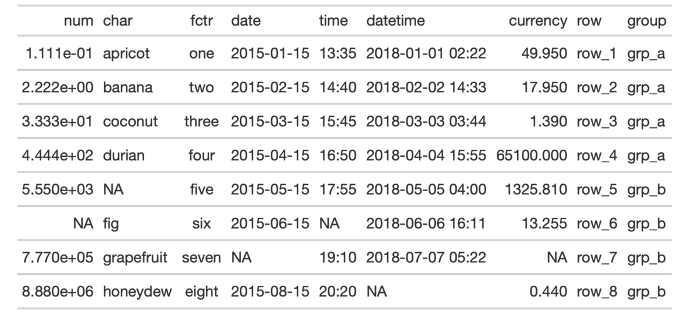
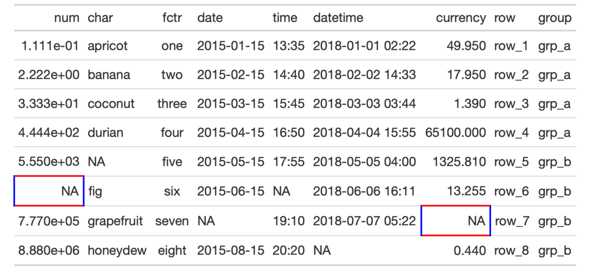

| cell_borders {gt} | R Documentation |
The cell_borders() helper function is to be used with the tab_style()
function, which itself allows for the setting of custom styles to one or more
cells. Specifically, the call to cell_borders() should be bound to the
styles argument of tab_style(). The selection argument is where we
define which borders should be modified (e.g., "left", "right", etc.).
With that selection, the color, style, and weight of the selected
borders can then be modified.
cell_borders(sides = "all", color = "#000000", style = "solid", weight = px(1))
sides |
The border sides to be modified. Options include |
color, style, weight |
The border color, style, and weight. The |
A list object of class cell_styles.


7-21
Other Helper Functions:
adjust_luminance(),
cell_fill(),
cell_text(),
cells_body(),
cells_column_labels(),
cells_column_spanners(),
cells_footnotes(),
cells_grand_summary(),
cells_row_groups(),
cells_source_notes(),
cells_stub_grand_summary(),
cells_stub_summary(),
cells_stubhead(),
cells_stub(),
cells_summary(),
cells_title(),
currency(),
default_fonts(),
escape_latex(),
google_font(),
gt_latex_dependencies(),
html(),
md(),
pct(),
px(),
random_id()
# Add horizontal border lines for
# all table body rows in `exibble`
tab_1 <-
exibble %>%
gt() %>%
tab_options(row.striping.include_table_body = FALSE) %>%
tab_style(
style = cell_borders(
sides = c("top", "bottom"),
color = "#BBBBBB",
weight = px(1.5),
style = "solid"
),
locations = cells_body(
columns = everything(),
rows = everything()
)
)
# Incorporate different horizontal and
# vertical borders at several locations;
# this uses multiple `cell_borders()` and
# `cells_body()` calls within `list()`s
tab_2 <-
exibble %>%
gt() %>%
tab_style(
style = list(
cell_borders(
sides = c("top", "bottom"),
color = "#FF0000",
weight = px(2)
),
cell_borders(
sides = c("left", "right"),
color = "#0000FF",
weight = px(2)
)
),
locations = list(
cells_body(
columns = num,
rows = is.na(num)
),
cells_body(
columns = currency,
rows = is.na(currency)
)
)
)